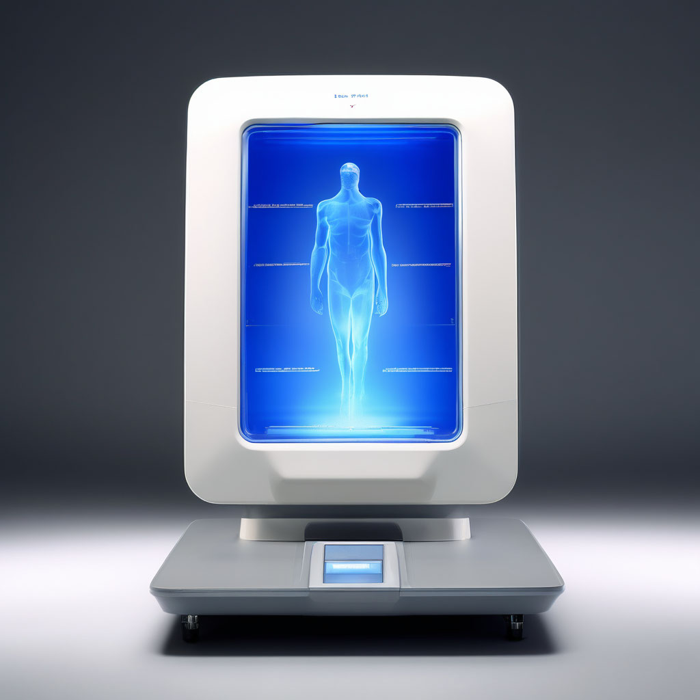

Сканирование тела

Описание:
Техника «Сканирование тела» способствует улучшению эмоционального и физического состояния, повышению оперативной памяти и творческих способностей, укреплению иммунной системы и нормализации давления.
Категория техники:
Смыслы
Время:
20 минут
Зачем:
*Улучшение эмоционального и физического состояния. *Повышение настроения и качества жизни. *Повышение качества сна. *Улучшение оперативной памяти и творческих способностей. *Стимулирование мозговой деятельности и иммунной системы. *Концентрация внимания и повышение скорости реакции. *Увеличение эмоциональной устойчивости и физической выносливости. *Снижение артериального давления. Улучшение кровообращения и пищеварения.
Как это работает:
Суть техники «Сканирование тела» залючается в том, чтобы направлять осознанное внимание поочередно на все части тела, уделяя особое внимание дыханию. Дыхательная практика позволяет успокоить разум, избавиться от назойливых мыслей, сконцентрироваться на своем теле, а фокусировка и осознанное переключение внимания благотворно влияют на эмоциональное и физическое состояние, нейтрализуют негативные эмоции. «Сканирование тела», как и другие техники, основанные на расслаблении, дыхании, визуализации, способствует гармоничному развитию физических и психических способностей. При регулярном выполнении вы сможете научиться лучше чувствовать свое тело, управлять эмоциями и почувствуете внутренний комфорт. Как результат — обретете большую веру в себя и уверенность в своих силах. Такая осознанная медитация — это мощный способ справиться со стрессом, тревогой или раздражительностью. Доказано, что люди, которые регулярно занимаются медитациями, чувствуют большую удовлетворенность жизнью и меньше подвержены психологическому истощению.
Алгоритм выполнения:
-
Для медитации выберите самое удобное положение — лежа, сидя на стуле или стоя. Если в помещении прохладно, чтобы было теплее и комфортнее, можно укрыться легким пледом. Если при выполнении техники почувствуете боль или дискомфорт, поменяйте свое положение. Инструкция по выполнению техники написана для положения лежа. Если вы выбрали другое положение, адаптируйте ее для себя. Медитация «Сканирование тела» занимает 10 минут. Рекомендуем выполнять ее шесть дней в неделю.
-
Подготовка
-
Удобно устройтесь на полу или на кровати. Положите руки на живот.
-
Прижмите лопатки к поверхности, закройте глаза, расслабьте руки и мышцы лица.
-
Вытяните ноги. Если есть проблемы с поясницей, подложите подушку под колени или согните ноги, поставив ступни на пол на ширине бедер.
-
Почувствуйте, что вы всем весом прижались к поверхности, на которой лежите.
-
Сканирование
-
Сконцентрируйтесь на ощущениях дыхания в животе, там, где у вас лежат руки. Дышите медленно и спокойно. Не пытайтесь изменить дыхание — внимательно понаблюдайте за его естественным ритмом. Почувствуйте, как ваши ребра на вдохе расширяются и возвращаются в исходное положение на выдохе. Обратите внимание, как надувается живот. А на выдохе внутренние органы, живот возвращаются назад.
-
Представьте, как ваше дыхание эхом отдается в области таза — между анусом, мочеполовыми органами и ягодицами. Если вы заметили, что ягодицы напряжены, позвольте им расслабиться и почувствуйте, как они соприкасаются с кроватью или полом.
-
Переместите внимание к пояснице, затем в среднюю и верхнюю части спины, следуя за естественным изгибом позвоночника. Почувствуйте свое дыхание на всей задней поверхности тела. Если вы ощутили боль или дискомфорт в пояснице, направьте туда дыхание.
-
Остановите свое внимание на ребрах и легких. Почувствуйте их расположение. Направьте свое внимание на заднюю плоскость тела.
-
Переведите свое осознанное внимание к плечам. Затем сосредоточьтесь на плечах, затем локтях, предплечьях, кистях и пальцах рук.
-
Мысленно вернитесь вверх, сканируя вниманием руки. Направьте свое внимание на горло, затылок и шею. Наполните осознанным вниманием голову и лицо. Почувствуйте голову. Если вы выполняете упражнение лежа, то она становится тяже лой и нужно ощутить ее вес. Расслабьте свое лицо: челюсть, губы, язык, щеки, веки.
-
Переместите свое внимание вниз к бедрам. Расслабьте ноги и разверните стопы в разные стороны. Почувствуйте тяжесть ваших ног (на полу или кровати) и переместите ваше внимание к передней, задней и боковой поверхностям бедер.
-
Направьте внимание вниз к коленям, голеням, лодыжкам, ступням, верхней поверхности стоп. Сконцентрируйте внимание на пальцах ног.
-
Охватите своим вниманием все тело: ноги, переднюю, заднюю и боковые поверхности туловища, руки, шею и голову. Почувствуйте, как при дыхании тело как бы расширяется на вдохе и возвращается в свой объем на выдохе. Если в какой-то части тела вы ощутили боль или дискомфорт, позвольте вашему дыханию наполнить ее.
-
Завершение Не спеша завершите медитацию. Медленно откройте глаза и пошевелитесь. Представьте, что ваше тело становится более текучим и гибким, а ваши дальнейшие действия будут наполнены добрым и мягким дыханием, независимо от того, чем вы будете заниматься. После того как вы освоите медитацию «Сканирование тела», нужно переходить ко второй части — технике «Якорь дыхания». Техника «Якорь дыхания» Эта техника научит вас наблюдать за своими мыслями со стороны, перестать смотреть на них сквозь призму боли, стресса и тревоги. Вы сможете избавиться от навязчивых автоматических мыслей и включать режим осознанности. Содержание техники приведено по книге «Осознанная медитация: практическое пособие по снятию боли и стресса» [413]. Инструкция написана для положения «сидя на стуле», но вы можете выполнять технику лежа, стоя или даже на ходу. Выберите максимально удобное для вас положение.
-
Сядьте на стул с прямой спиной. Старайтесь сохранять естественный изгиб позвоночника, но не напрягать спину. Ноги должны стоять на полу. Почувствуйте силу притяжения и опору под ногами. Закройте глаза и позвольте своему телу расслабиться.
-
Дышите спокойно и размеренно. Направьте свое осознанное внимание к ощущениям, сопровождающим дыхание. Прислушайтесь, в какой области вы наиболее четко ощущаете дыхание.
-
Сосредоточьтесь на ощущениях в теле. Почувствуйте, как ваш живот поднимается на вдохе и опускается на выдохе, как дыхание проходит по бокам и спине. Представьте, что вместе с дыханием вы наполняете свое тело легкостью и внимательностью ко всему, что происходит сейчас в вашем теле. Примите все эти процессы. Представьте, что ваше дыхание наполняется добротой и мягкостью, которые словно убаюкивают ваше тело, постепенно растворяя стресс, боль или дискомфорт, если они есть.
-
Направьте осознанное внимание на свои мысли и эмоции, в том числе на повторяющиеся и неприятные. Посмотрите на них не изнутри, а снаружи, со стороны. Попробуйте осознать, что вы можете смотреть на свои мысли и чувства, не вовлекаясь и не погружаясь в них. Обратите внимание, как они меняются ежесекундно, точно так же, как меняется ваше дыхание.
-
Представьте, что ритм вашего дыхания и связанные с ним ощущения — это якорь вашей осознанности. Возвращайтесь к нему вновь и вновь — с каждым вдохом и выдохом. Если ваше внимание рассеивается и вы ловите себя на том, что отвлеклись, зафиксируйте этот момент и вернитесь к своему якорю. Повторяйте это каждый раз, когда будете отвлекаться, не забывая проявлять к себе доброту и терпение. Мысленно ответьте на вопросы: «Что происходит с вами сейчас? О чем вы думаете?» И вновь возвращайтесь к ощущениям дыхания.
-
Не спеша завершите медитацию. Медленно откройте глаза и начните шевелиться. Дайте себе достаточно времени, чтобы перейти от медитации к следующему делу.
Дополнительные упражнения:
- Медитация «Красный шар»
Почитать больше о технике:
- Анапанасати сутта. Практическое руководство по осознанности дыхания и медитации безмятежной мудрости. Веб-публикация: https://breathe.ru/statya/anapanasati-sutta [22.09.2020]. Берч В. Осознанная медитация. Практическое пособие по снятию боли и стресса. — М.: МИФ, 2014. Випассана — суть и техника. Веб-публикация: http://all-yoga.ru/page/vipassana-sut-i-tehnika [25.09.2020]. Влияние медитации на мозг: миф или реальность? Веб-публикация: https://monocler.ru/mozg-i-meditatsiya/ [23.09.2020]. Гулиева Э. Медитация Кундалини. Пошаговое руководство. Веб-публикация: https://www.mindvalleyrussian.com/blog/dyshi/meditatsiya/meditatsiya-kundalini.html [30.09.2020]. Гунаратна В. Ф. Сатипаттхана Сутта и ее применение в жизни. Веб-публикация: https://theravada.world/satipatthana-sutta-i-ee-primenenie-v-zhizni/ [30.09.2020]. Дефуа Н. Медитация как метод психотерапии. Веб-публикация: https://www.liveexpert.ru/journal/view/909291-meditaciya-kak-metod-psihoterapii [15.09.2020]. Кабат-Зинн, Джон. Куда бы ты ни шел — ты уже сам: осознанная медитация в повседневной жизни. — М.: Эксмо, 2019. Кольцова Е. Медитация и психотерапия. Веб-публикация: https://snob.ru/profile/29070/blog/114429 [01.10.2020]. Марчант , Джо. Может ли медитация замедлить наше старение? Веб-публикация: https://www.bbc.com/russian/science/2014/07/140709_vert_fut_meditation_delay_ageing [30.09.2020]. Медитация на Шабде. Веб-публикация: http://www.sos-org.ru/glava-1-meditaciya-na-shabde/ [30.09.2020]. Нейроны просветления: что именно происходит с мозгом, когда вы медитируете? Веб-публикация: https://theoryandpractice.ru/posts/9883-brain-and-nirvana [05.09.2020]. Пятронене Г. Медитация и психотерапия. Веб-публикация: http://hpsy.ru/public/x2275.htm [14.09.2020]. Романин А. Н. Медитативная психотерапия. Веб-публикация: http://www.psyarticles.ru/view_post.php?id=306 [05.10.2020]. Сатипаттхана — что это такое? Как стать свободным от эго. Веб-публикация: http://o-buddizme.ru/praktiki-i-meditaciya/satipattkhana [15.09.2020]. Сильная техника медитации на ощущение пустоты. Управление судьбой. Веб-публикация: https://www.sudba.info/silnaya-texnika-meditacii-na-oshhushhenie-pustoty [03.09.2020]. Тинлей, Геше Джампа. Ум и пустота. — М.: Цонкапа, 2002. Типы медитации — осознанности, для сна и для начинающих. Обзор научных исследований. Мифы и предрассудки. Веб-публикация: https://reminder.media/longread/meditatsiya-chto-izvestno-nauke-i-kak-praktikovat [05.09.2020]. Трансцендентальная медитация — что это? Веб-публикация: http://howmake.in.ua/meditatsiya/transtsendentalnaya-meditatsiya.htm [10.09.2020]. Тратака — практика йоги для глаз и ума. Веб-публикация: https://indiada.ru/yoga/trataka.html [04.10.2020]. Тюльганова Д. Медитация поможет поддержать внимание? Веб-публикация: http://neuronovosti.ru/meditatsiya-pomozhet-podderzhat-vnimanie/ [17.09.2020]. Уэлвуд Дж. Пробуждение сердца. Западный и восточный подход к психотерапии и терапевтическим отношениям. — Боулдер, 1983. Веб-публикация: http://psylib.org.ua/books/welwo01/index.htm [03.09.2020]. Фрейд М. Примирить душу и тело: телесные практики для жизни без болезней и стресса. — М.: Эксмо, 2020. Что наука может рассказать нам о практике медитации. Веб-публикация: https://buddhavgorode.com/science-about-practice/ [20.09.2020]. Что такое Анапанасати? Краткие и понятные инструкции. Веб-публикация: https://welfort.com/ru/anapanasati-instructions/ [21.09.2020]. Шмигель М. Е. Медитация и психотерапия. Веб-публикация: https://www.b17.ru/article/meditation_psychoterapy/ [25.09.2020]. Ясный А. Медитация для психотерапии. Веб-публикация: https://www.b17.ru/article/meditation_psychology/ [23.09.2020]. Benefits of Meditation. Веб-публикация:https://eocinstitute.org/meditation/meditation-helps-you-to-solve-complex-problems/ [19.08.2020]. Choi, Charles Q. Meditation May Get You Out of Mental Ruts. Веб-публикация: https://www.livescience.com/20921-meditation-helps-depression.html [20.08.2020]. Gelles, D. How to meditate. Веб-публикация: https://www.nytimes.com/guides/well/how-to-meditate [25.08.2020]. ujita, Issho. Zazen Is Not the Same as Meditation. Barre Center for Buddhist Studies. Веб-публикация: https://www.buddhistinquiry.org/article/zazen-is-not-the-same-as-meditation/ [18.08.2020]. How to meditate. Веб-публикация: https://www.mindful.org/how-to-meditate/ [23.08.2020]. Rabin R. C. Ask Well: The Health Benefits of Meditation. Веб-публикация: https://well.blogs.nytimes.com/2015/11/10/ask-well-the-health-benefits-of-meditation/ [15.10.2020]. Seizan Egyo. What Meditation Isn’t. Веб-публикация: https://medium.com/s/story/meditation-what-it-isnt-why-it-s-good-and-how-to-get-started-d408ddc6d451 [23.08.2020]. Siddhaswarupananda, Jagad Guru. How To Problem Solve With Meditation. Веб-публикация: https://wisdom.yoga/problem-solve-with-meditation/ [21.09.2020]. Tantra for beginners: 8 easy steps to learn tantra meditation. Веб-публикация: https://www.online-tantra.com/tantra-for-beginners/ [25.05.2020]. Tantric Meditation Solo. Веб-публикация: https://pinklotuspetals.org/f/tantric-meditation-solo [18.08.2020]. Zazen Instructions. How to meditate. Веб-публикация: https://zmm.org/teachings-and-training/meditation-instructions/ [30.08.2020].
Рекомендуем прочитать:
- Лао-цзы. Дао дэ цзин. — СПб.: Азбука, 2014. Кабат-Зинн, Джон: Куда бы ты ни шел — ты уже там. Осознанная медитация в повседневной жизни. — М.: Эксмо, 2019. Фрейд Мишель. Примирить душу и тело. Телесные практики для жизни без болезней и стресса. — М.: Бомбора, 2020. Берч, Видьямала, Пенман, Денни. Осознанная медитация: практическое пособие по снятию боли и стресса. — М.: МИФ, 2014.